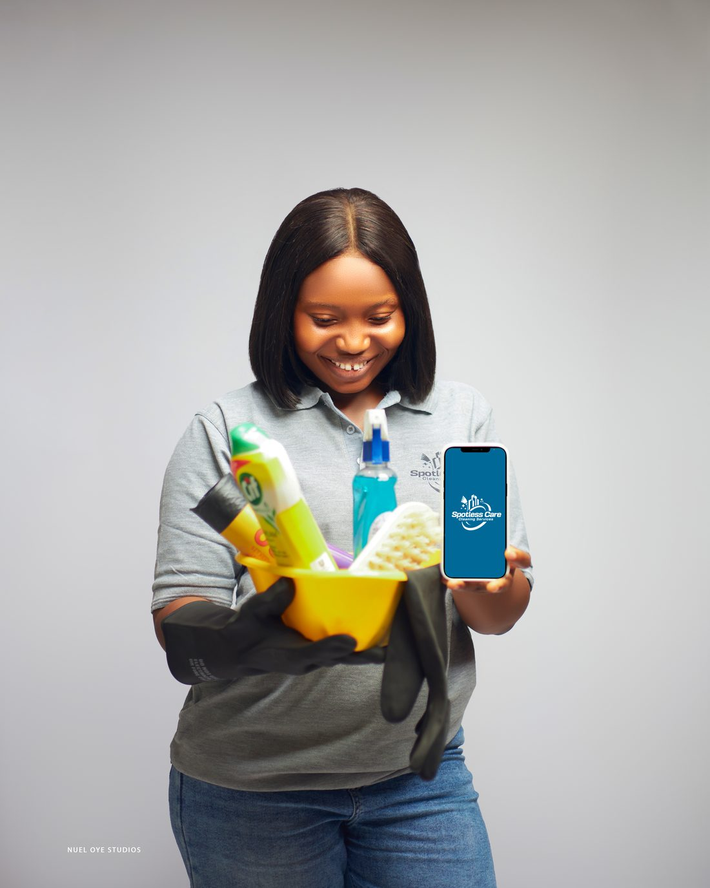
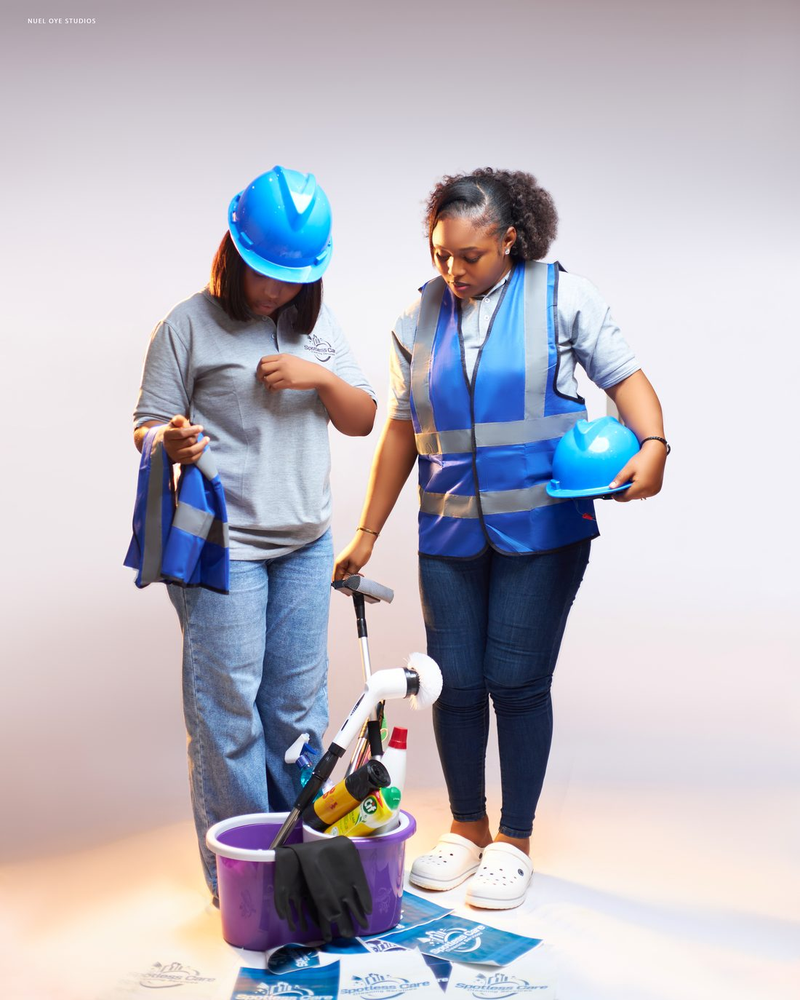
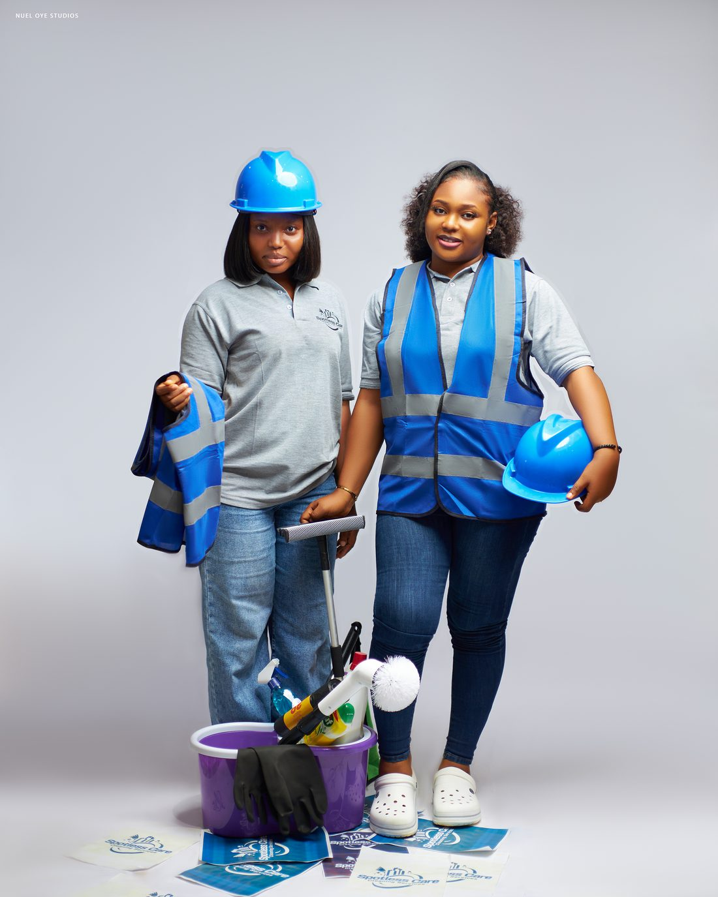

Abuja & the FCT · Homes, Offices, Facilities
Professional Cleaning & Fumigation Services in Abuja
Trained crews, documented procedures and a supervisor who signs off before we leave. We cover Maitama, Wuse, Asokoro, Gwarinpa, Garki, Kubwa, Lokogoma, Apo and all zones.
Trained Crews Supervised Jobs Eco-Friendly Products Free Video Assessment

Our Story
Cleaning Done Properly
For Abuja Homes & Offices
Spotless Care Cleaning Services is a modern cleaning company delivering consistent, hygienic and high-quality cleaning for homes, offices, facilities and pools across Abuja and the FCT. Our service model blends trained personnel, documented standard operating procedures, quality-control checklists and professional-grade equipment so that every space we touch is clean, safe and client-ready.
Cleaning is easy to promise and hard to repeat. These are the four commitments we hold ourselves to on every single visit, whether it is a one-bedroom flat or a running office floor.
What We Offer
Our Services
From routine home cleaning, post-construction clean-ups and move-in deep cleaning to pool maintenance and upholstery cleaning — we hold one standard across all of it.
Why Choose Spotless Care
The Difference Is
In The Details
From keeping your home fresh and well maintained to taking on the mess left behind after construction, we believe the job is not finished until the details are right. We know where to look, and how to tackle the areas that are often overlooked.
At Spotless Care, we do not believe in rushing through a job just to make a space look clean. We take our time to hold the standard our clients expect of us.
Our Crew
Meet the Team
You will know our crew when they arrive: branded polo, hi-vis vest, safety helmet, gloves, and the right equipment for the job already in hand. Trained, supervised and presentable — because we are usually working in someone's home or in front of their clients.




How We Vet Our Cleaners
We understand that inviting someone into your home, office or business requires trust. That is why we do not just send anyone out on a job.
Every cleaner who joins Spotless Care Cleaning Services goes through a careful, detailed selection process. We assess their experience, attitude, reliability, professionalism and attention to detail. We also verify their identity and carry out reference checks where applicable.
Vetting does not stop at recruitment. Our cleaners are trained to meet our standards, and their work is monitored to make sure they consistently deliver the level of service our clients expect.
For us, cleaning is more than making a space look good. It is about giving you peace of mind about who you are allowing into your space.
Client Stories
What Our Clients Say
Definitely 1000/10. You're not the first cleaning service that has cleaned my house, but definitely the best. Thank you.
Mrs NafisatGaladimawa · Home Maintenance Deep Clean & Sofa LaundryThanks for the hard work done, we truly appreciate it. Looking forward to you sharing our videos on Instagram so we can collect royalty.
Mr FamakinwaLife Camp · Post-Construction CleaningThank you, you've done well. I appreciate.
Miss Ayozie LyndaLife Camp · Move-In Deep Cleaning & Smoke FumigationLet us take cleaning off your plate
Tell us the space and the schedule you have in mind and we will come back with next steps, or arrange a site inspection at a time that suits you.
Call 090 3616 5264
WhatsApp 090 3616 5264 / 081 3591 7501
spotlesscare2service@gmail.com